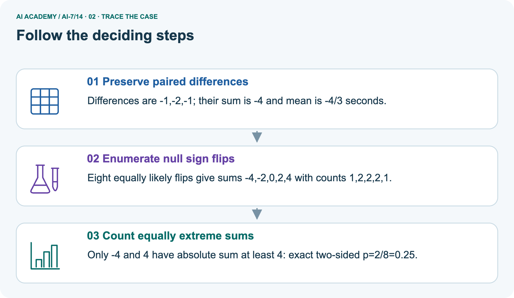
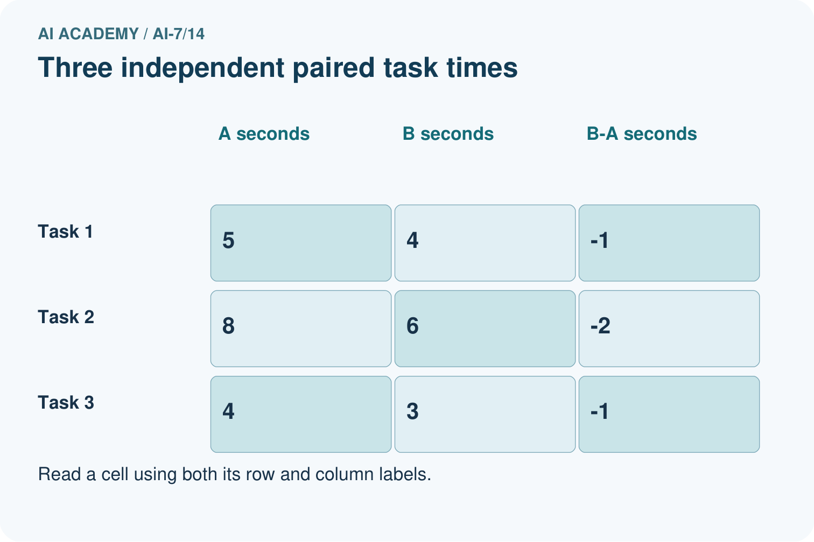
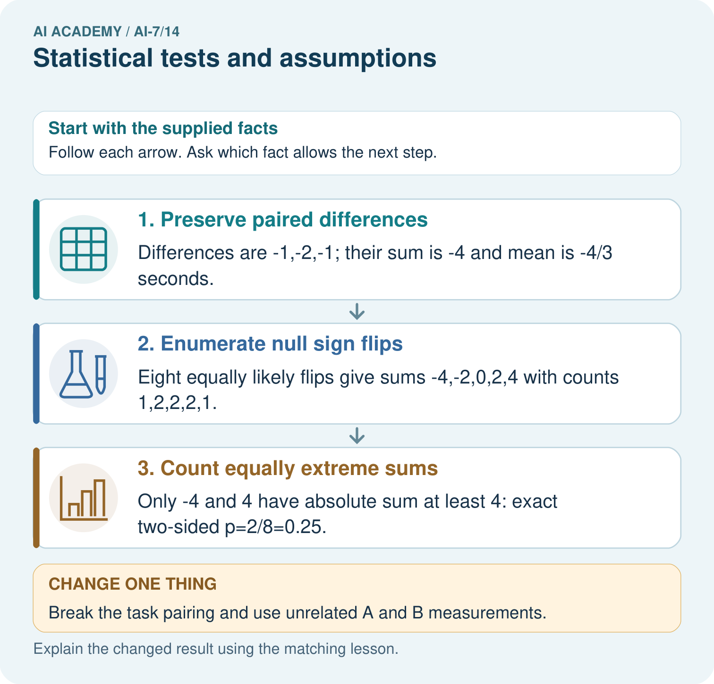
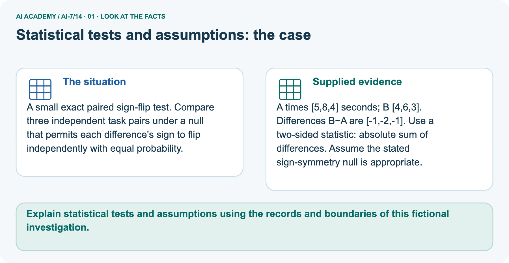
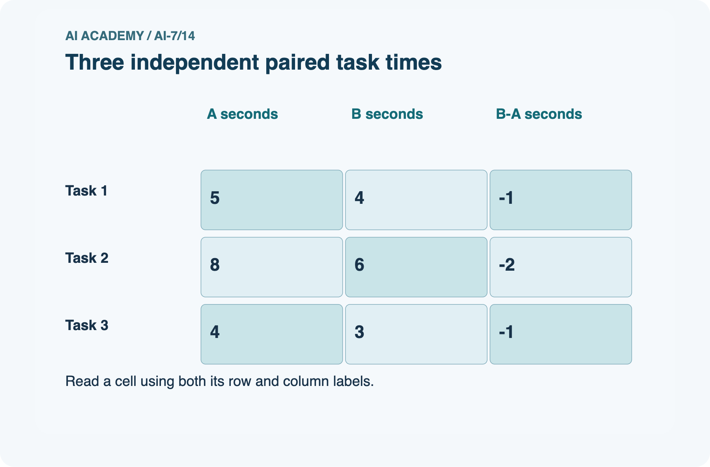
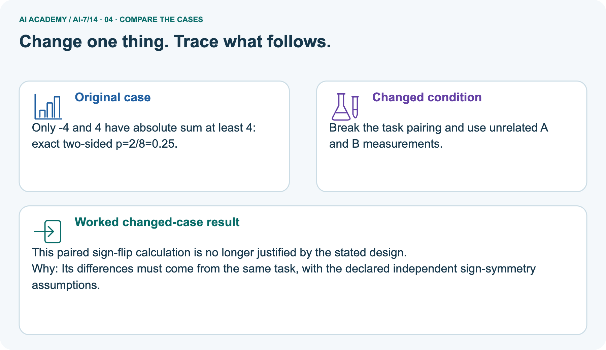
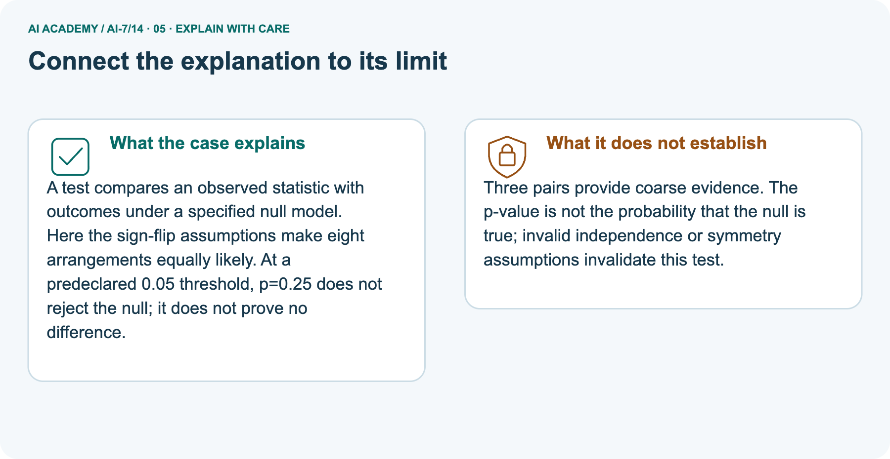
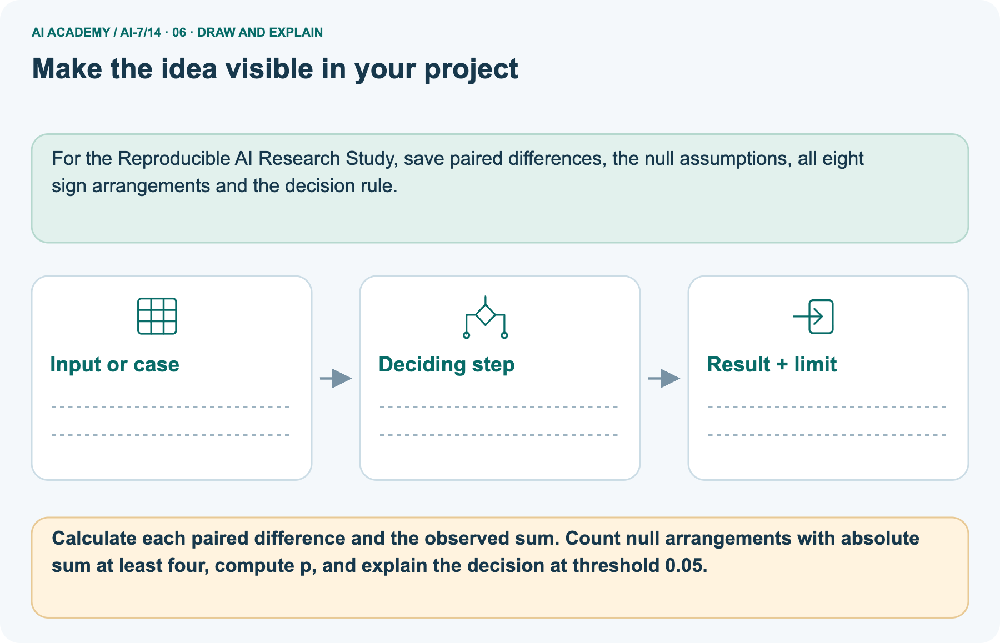

AI Academy · Level 7 · Grade 12 · Week 14 · Teacher guide
Statistical tests and assumptions
Learn to understand, design, build, test and explain AI systems responsibly.
Project: Reproducible AI Research Study
THE CONNECTED WEEK
Ask which null makes each sign assignment equally likely and which events count as extreme.
Teach exact tests without confusing p with null probability, effect importance or verified design.
Keep one habit: Model two-sided tail → inspect picture sign counts → test tiny-scale invariance → assess rescaled independent case → retain assumptions and numerical correction.
Main lesson · Section 1
Prepare the connected research investigation
Keep modelling, shared practice and independent evidence distinct.
Target and main teaching plan
Primary target: Explain the mechanism and terminology of statistical tests and assumptions
| Session | Sequence and minutes | Resources |
|---|---|---|
| Session 1 · Understand · 45 min | 0–7: recall and prerequisite; 7–15: inspect the concrete case and predict; 15–30: teacher models the worked trace; 30–40: learners explain a step using the text and visual; 40–45: check the core idea. | Use Your mission, Notice the evidence, See how it works, Words that unlock the idea and Follow a worked example; record the brief recall in the workbook. |
| Session 2 · Practise · 45 min | 0–5: retrieve the procedure; 5–15: W2 completion practice; 15–23: explain and check with a partner; 23–30: each learner answers the misconception check; 30–40: targeted reteaching or a harder variation; 40–45: prepare the investigation. | Use Find and repair a mistake, Practise together and Run the investigation, with workbook W2 and Individual reasoning check. |
| Session 3 · Investigate and transfer · 45 min | 0–5: retrieve the decision rule; 5–20: investigate or trace; 20–30: start the independent case; 30–38: connect the project; 38–43: act on feedback; 43–45: plan the return check. | Use Run the investigation, Build your understanding, Connect your project and Show what you know. Reserve further time for the full task set. Use a code example only where one is actually supplied. |
This is a starting allocation of 135 minutes, not a validated duration. Preserve all named topics. Schedule extra time for connected examples, the full investigation, independent cases and project building.
Repeated copies of a case share one recorded attempt; they are not new evidence.
Preparation and prerequisite
Lesson and workbook; paper and pencil
Calculator and optional local Python 3 for arithmetic; no live API or private data
Prepare the fresh retry separately and withhold its solution until after collection
A result depends on the inputs, procedure and conditions that produced it. Preserve data roles and distinguish observed outcomes from predictions or unmeasured conditions.
If the prior concept cannot be explained, use a short retrieval activity before this chapter.
Opening retrieval
Without opening the old lesson, explain one key idea from Effect size and practical importance. Give an example and a mistake that the idea helps you avoid.
Look for: Explain the mechanism and terminology of effect size and practical importance
Reference example, not the only acceptable wording: Teacher explanation: Effect size describes magnitude on a stated scale. Practical importance depends on task requirements, not merely a nonzero difference.
For paired response durations compute baseline minus candidate per case and average the differences. Positive means faster candidate. Compare with a prespecified minimum useful gain.
Without opening the old lesson, explain one key idea from Sampling variability. Give an example and a mistake that the idea helps you avoid.
Look for: Explain the mechanism and terminology of sampling variability
Reference example, not the only acceptable wording: Teacher explanation: Sampling variability means different eligible samples can give different estimates even under the same population. Separate this from procedure changes.
Consider finite population values1, 1, 3, 3 with distinct IDs. Enumerate the six unordered samples of size2 without replacement. Their means are1, 2, 2, 2, 2, 3.
Without opening the old lesson, explain one key idea from Baselines and fair comparisons. Give an example and a mistake that the idea helps you avoid.
Look for: Explain the mechanism and terminology of baselines and fair comparisons
Reference example, not the only acceptable wording: Teacher explanation: Fair baselines use credible procedures on matched evidence and resource conditions. A weak arbitrary reference can exaggerate improvement.
For a room-reporting study use manual authoritative lookup or a deterministic same-room rule, not random room names. Match cases, available sources and scoring.
Pictured end goal
Explain statistical tests and assumptions using the records and boundaries of this fictional investigation.
Earlier wording, alternatives and picture transcripts
Teach the learning cycle
Retrieval answer guidance
Effect size and practical importance
Sampling variability
Baselines and fair comparisons
Compact alternative: two 45-minute sessions for the core explanation and W1–W5 only. The main plan uses three sessions; schedule further time for the complete investigation, project, visual journey and any code examples. A statistical test compares observed evidence with a specified null model. A p-value is not the probability that the null hypothesis is true.
Use the supplied constructed scenarios to make the mechanism inspectable. Collect W4 before sharing solutions.
Students should name intermediate evidence and limitations; classroom pacing and learning effectiveness remain unvalidated.
Outcomes
Explain the mechanism and terminology of statistical tests and assumptions
Apply the stated procedure to a new case with a traceable result
Identify an assumption or limitation and design a revealing follow-up
Preparation
Prerequisite answer
End goal for the pictorial case
This added worked case illustrates the week’s main idea. Retain all original and connected topics; schedule its practice within the teaching cycle.
Main lesson · Section 2
Teach exact conditional tests with explicit design assumptions and numerical safeguards
Keep observed differences, null possibilities, tail rule and inference limits distinct.
Definitions and complete paired-null contract
A statistical test compares observed evidence with a specified null model. A p-value is not the probability that the null hypothesis is true.
Toy paired sign-flip test assumes independent paired differences whose signs are exchangeable under a symmetric zero-effect null. Enumerate all 2^n sign assignments, holding magnitudes fixed. Two-sided p is fraction with absolute mean at least the observed absolute mean; use inclusive ties.
| Exact-test item | Complete constructed sign-flip contract |
|---|---|
| Main observed differences | 1, 1, 1 from three independent paired units |
| Null assumptions | Valid pairing; independent equiprobable signs conditional on fixed magnitudes under the symmetric zero-effect null |
| Not sufficient by itself | A statement that the mean is zero does not establish the required sign exchangeability |
| Null enumeration | All eight sign assignments; each has probability 1/8 |
| Two-sided statistic | Absolute mean; with fixed n, absolute sum gives the same extremeness ordering |
| Inclusive tail rule | Count assignments at least as extreme, including ties |
| Decision rule | Predeclared alpha 0.05; reject only if exact p ≤ alpha |
| Arithmetic | Exact integers/Fraction values in complete code; no arbitrary absolute tolerance |
| Scope | Conditional toy calculation; pairing, independence, symmetry and actual randomization are assumed, not verified by code |
Main eight-assignment ledger and checked reasoning
| Sign assignment for magnitudes 1, 1, 1 | Signed sum | Absolute mean | At least observed 1? |
|---|---|---|---|
| − − − | −3 | 1 | Yes |
| − − + | −1 | 1/3 | No |
| − + − | −1 | 1/3 | No |
| − + + | 1 | 1/3 | No |
| + − − | −1 | 1/3 | No |
| + − + | 1 | 1/3 | No |
| + + − | 1 | 1/3 | No |
| + + + | 3 | 1 | Yes |
| Inclusive exact tail | Two of eight assignments | p=2/8=0.25 | Above alpha 0.05: do not reject |
Main three observed differences of 1, 1, 1 give absolute mean 1. Eight equiprobable sign assignments have two extreme arrangements, so p=0.25 and do not reject at 0.05. Picture paired times give B−A differences of −1, −2, −1, sum −4, mean −4/3; null sums of −4, −2, 0, 2, 4 have counts of 1, 2, 2, 2, 1, again p=0.25. Include ties and both tails.
The selected differences of 2, 2, 2 rescales the same sign pattern: p=2/8=0.25, not significant at 0.05 under this specific test. This resolution limit does not apply to every small-n method. Exact arithmetic correction preserves tiny-scale invariance, but cannot validate pairing, independent symmetric signs or causal interpretation.
Broken pairing invalidates this model; non-rejection proves neither null truth nor practical equivalence.
Statistical tests and assumptions — evidence trace
Guided: Only all-plus and all-minus have absolute mean 1; others have 1/3. Exact p=2/8=.25. At alpha .05 do not reject; this does not prove zero effect. Qualification: The test requires its sign-exchangeability and independence assumptions; do not apply it blindly to clustered or asymmetric differences. Exit: accept a concrete variation with its predicted outcome and a stated condition that would challenge the mechanism; reject a claim resting on unmeasured evidence.
Three independent paired differences are 1, 1, 1. Under the stated symmetric zero-effect null, all eight independent sign assignments are equally likely. Use the absolute mean, include equally extreme ties, and compare the exact two-sided p-value with alpha 0.05.
Only all-plus and all-minus have absolute mean 1; others have 1/3. Exact p=2/8=.25. At alpha .05 do not reject; this does not prove zero effect.
Compare the intermediate evidence with the final statement. Explain why each number or decision follows from the stated inputs.
The conclusion belongs to this scenario and procedure; changing the inputs, evaluation population or authority can change what it establishes. Retain the raw record so a later revision can be compared honestly.
Inclusive tails, resolution and scale probes
| Test/assumption probe | Expected interpretation |
|---|---|
| Observed statistic equals a null arrangement | Include ties in at-least-as-extreme count |
| Only favorable-sign extreme counted | Wrong for this declared two-sided absolute-statistic rule |
| Exact p = 0.25 at alpha 0.05 | Do not reject; not evidence that null is true with probability 0.25 |
| No rejection | Does not establish zero effect or practical equivalence |
| Three nonzero paired magnitudes in this sign-flip setup | Smallest two-sided tail is 2/8; magnitude alone cannot reach 0.05 |
| Any small-n test in general | Do not generalize this specific resolution limit to all statistical methods |
| Scale all differences by the same positive constant | Extremeness ordering and exact p should stay unchanged |
| Absolute numeric epsilon overwhelms tiny values | Can corrupt ties/tail counts; use exact arithmetic here |
| Pairing or sign assumptions invalid | The numerical p does not validate the design |
Separate paired-time null counts and native chart
A small exact paired sign-flip test. Compare three independent task pairs under a null that permits each difference’s sign to flip independently with equal probability.
A times [5,8,4] seconds; B [4,6,3]. Differences B−A are [-1,-2,-1]. Use a two-sided statistic: absolute sum of differences. Assume the stated sign-symmetry null is appropriate.
The picture uses separate paired times A=[5, 8, 4] and B=[4, 6, 3] seconds. B−A differences are−1, −2, −1, with sum −4 and mean −4/3 seconds. Fix magnitudes 1, 2, 1 and enumerate eight equally likely sign arrangements under the declared null. Signed sums−4, −2, 0, 2, 4 occur 1, 2, 2, 2, 1 times. Only−4 and+4 have absolute sum at least 4, so p=2/8=0.25.
Do not reject at 0.05; neither zero effect nor practical unimportance is proved. If the A/B measurements are unrelated rather than valid pairs, this paired analysis is unjustified. Exact arithmetic cannot repair the study design.

| Separate picture quantity | Complete supplied calculation |
|---|---|
| Paired B−A differences | 4−5=−1; 6−8=−2; 3−4=−1 seconds |
| Observed sum / mean | −4 seconds / −4/3 seconds |
| Fixed null magnitudes | 1, 2, 1 |
| Signed-sum counts | −4:1; −2:2; 0:2; 2:2; 4:1, total 8 |
| Inclusive extreme arrangements | Absolute sum≥4:−4 and+4, one each |
| Exact two-sided p | 2/8=0.25 |
| Decision at alpha 0.05 | Do not reject under this model |
| What is not proved | Null truth, zero difference, practical equivalence or valid pairing |
Picture trace and unrelated-measurement key



Read the picture one step at a time
A test compares an observed statistic with outcomes under a specified null model. Here the sign-flip assumptions make eight arrangements equally likely.
At a predeclared 0.05 threshold, p=0.25 does not reject the null; it does not prove no difference.
Three pairs provide coarse evidence. The p-value is not the probability that the null is true; invalid independence or symmetry assumptions invalidate this test.
Change: Break the task pairing and use unrelated A and B measurements.
Prediction: This paired sign-flip calculation is no longer justified by the stated design.
Reason: Its differences must come from the same task, with the declared independent sign-symmetry assumptions.
Primary paired-permutation reference
Primary implementation reference: SciPy “permutation_test” documentation, https://docs.scipy.org/doc/scipy/reference/generated/scipy.stats.permutation_test.html. Its paired-sample permutation description explains within-pair exchange and one-sample sign changes.
This lesson explicitly defines an absolute-statistic, inclusive-tail exact calculation over tiny supplied rational differences; it adds no SciPy dependency or actual random assignment.
Earlier wording, alternatives and picture transcripts
Begin by writing the question the procedure is intended to answer. Identify the information already supplied, the information it will produce and the information still missing.
These are constructed classroom examples; they do not require live accounts, private records or an external service. Do not treat a plausible explanation as a measured outcome.
Before applying the procedure, write its units, denominator or decision boundary where relevant. A partner should be able to repeat each step using the same inputs.
If a required input is absent or violates the stated contract, record that condition explicitly instead of quietly replacing it with a convenient value.
| Term | Meaning |
|---|---|
| Null model | The probability model used for a test comparison |
| P-value | The null-model chance of an outcome at least as extreme under the defined statistic |
| Exchangeability | An assumption permitting the declared rearrangements |
Model the reasoning aloud
Use the complete worked example below before asking learners to complete W2. Reveal a small part, invite a prediction, then explain the deciding step.
These teacher notes contain solutions; do not reveal the independent case answer during modelling.
Optional local lab: predict the printed result before running this standalone Python 3 example. Change one relevant boundary input, record the outcome and state the contract or statistical assumptions.
The program uses fictional values and the Python standard library; it performs no external operations.
from itertools import product
from fractions import Fraction
def sign_flip_p(differences):
"""Two-sided exact test under independent symmetric sign exchangeability.
Tiny n only; hold absolute magnitudes fixed and include equal extremes.
A p-value is not a posterior probability that the null is true.
"""
if not differences or len(differences) > 16:
raise ValueError('require 1–16 paired units')
differences = [Fraction(d) for d in differences]
threshold = abs(sum(differences))
count = 0
for signs in product((-1, 1), repeat=len(differences)):
simulated = abs(sum((s * abs(d) for (s, d) in zip(signs, differences))))
if simulated >= threshold:
count += 1
return count / 2 ** len(differences)
print(sign_flip_p([1, 1, 1]))| Thinking move | Teacher prompt |
|---|---|
| Plan | What is given? What is the question? Which procedure fits these facts? |
| Do | Point to each input and intermediate step in the worked trace. Name the rule that allows the next step. |
| Check | Does the output answer the question? Which assumption or limitation prevents a larger claim? |
Use the diagram and verbal explanation together. Ask learners to match a sentence to a specific visual step; do not assign learners fixed visual or auditory learning styles.
A pictorial worked case: Statistical tests and assumptions
The facts we will use






Why this result follows
What this example does not establish
Change one thing in the pictured case
Ask while showing the picture
Cover the result. Ask learners to name the inputs and predict the next step. Uncover one step, connect the icon to the actual procedure, and explain its evidence. Then change the supplied condition and compare.
The picture is a representation; it does not document execution of a real AI model.
Main lesson · Section 3
Model a step,then remove help
Collect each learner’s reasoning before showing a key.
Current completion task and checked reasoning
Completion task: Three independent paired differences are 1, 1, 1. Under the stated symmetric zero-effect null, all eight independent sign assignments are equally likely. Use the absolute mean, include equally extreme ties, and compare the exact two-sided p-value with alpha 0.05. Show the intermediate steps and give the conclusion with its scope.
Teacher check: Teacher explanation: Only all-plus and all-minus have absolute mean 1; others have 1/3. Exact p=2/8=.25. At alpha .05 do not reject; this does not prove zero effect.
Start by identifying the given inputs together. Leave the intermediate steps blank. If needed, model one step, then withdraw that help on the next step. Move to a full trace only when the partial trace is understood.
For partners, alternate explainer and checker; collect a response from every learner before discussion.
Individual misconception check
Use the worked case for Statistical tests and assumptions. Proposed explanation: “The worked result establishes every future case”. Decide whether this explanation is supported.
Point to the step or supplied fact that decides; explain your repair if needed.
Expected correction: The test requires its sign-exchangeability and independence assumptions; do not apply it blindly to clustered or asymmetric differences.
Collect explanations, not only yes/no votes. If a misunderstanding is common, re-model the relevant step for the class.
If it affects a few learners, give a short targeted group explanation while others solve a more demanding variation.
Pictured reasoning and changed case
Calculate each paired difference and the observed sum. Count null arrangements with absolute sum at least four, compute p, and explain the decision at threshold 0.05.
The differences are -1,-2,-1 and sum to -4. Two of eight sign arrangements have absolute sum at least 4, so p=0.25. This exceeds 0.05: do not reject under the stated null. This is not proof of equality.
Changed-case reasoning: This paired sign-flip calculation is no longer justified by the stated design. Its differences must come from the same task, with the declared independent sign-symmetry assumptions.
Collect each learner’s explanation before discussion. Use the first missing connection between input, deciding step and result to choose support. This question is worked-case practice, not fresh mastery evidence.
Accessible support and extension
Use the worked example in Sections 3 and 6. Collect a prediction before revealing its result; ask the learner to point to each intermediate fact.
Provide an input/procedure/result/limit frame and a calculator when needed. Ask students to identify the first step before completing the whole trace.
Extension: compare two concrete variants of this mechanism while holding unrelated conditions fixed; report both successful and unsuccessful outcomes.
Earlier wording, alternatives and picture transcripts
| Time or stage | Teacher action |
|---|---|
| Session 1: 0–7 minutes | Retrieve the prerequisite; identify the input, procedure and evidence source. |
| 7–18 minutes | Explain See how it works and Words that unlock the idea. Complete W1 with a mechanism-based explanation. |
| 18–32 minutes | Trace the declared procedure and worked case. Complete W2, recording intermediate steps. |
| 32–45 minutes | Discuss the diagram with the worked input; use W3 to distinguish measured claims and limitations. |
| Session 2: 0–8 minutes | Retrieve the worked reasoning and collect the guided response before discussing it. |
| 8–20 minutes | Compare a proposed boundary variant with the original case; identify what remains fixed. |
| 20–35 minutes | Collect W4 independently. Require the procedure trace and the bounded conclusion. |
| 35–45 minutes | Use W5 and exit responses for feedback. Administer the fresh retry after feedback and preserve both attempts. |
Reduce help deliberately
Individual reasoning check
Pictorial practice question
Reasoned teacher answer
Main lesson · Section 4
Run the complete supplied investigation
Separate predictions,actual runs and paper traces.
Complete inputs,expected results and limits
Main and picture exact null counts yield p=2/8=0.25 with inclusive two-sided tails. At alpha 0.05 do not reject, without proving the null or zero practical effect. Selected differences of 2, 2, 2 preserve sign ordering and give the same p = 0.25; three-unit resolution in this specific sign-flip procedure is not overcome by larger magnitudes.
Require legitimate independent pairs and the stated sign-exchangeability null, not a p-value for unrelated data.
Diagnose the current misconceptions
The worked result establishes every future case: The test requires its sign-exchangeability and independence assumptions; do not apply it blindly to clustered or asymmetric differences.
A missing input may be replaced without recording the change: A replacement changes the evidence or contract. Record the change and its justification; do not silently turn unknown into a measured value.
Repeating an assessed case is new independent evidence: A replay checks consistency. An example used for feedback or revision cannot later be described as untouched final evaluation.
Use Section 9 for the evidence ledger. Add a boundary or missing-input case and record the expected response before checking. More successful repeats of one case do not establish wider coverage.
Choose accessible support
| What the response shows | Next teaching action |
|---|---|
| Missing or misread facts | Read the case aloud, mark supplied versus unknown facts, and let the learner restate it. |
| Wrong procedure | Return to the deciding step in the worked case. Contrast it with the proposed incorrect explanation. |
| Arithmetic or implementation error | Trace intermediate values or lines; preserve the first mismatch and retry that step. |
| Correct result without a reason | Ask for a trace and a changed case before marking independent understanding. |
| An unsupported wider claim | Ask which supplied evidence supports the claim and which further observation would be needed. |
Offer an oral explanation, drawing, enlarged visual or fewer examples when that removes a reading/writing barrier. Keep the same reasoning goal.
Stretch secure learners by changing a boundary or assumption and asking them to defend the effect, not simply by assigning more of the same questions.
Earlier wording, alternatives and picture transcripts
Match the support to the first error
Main lesson · Section 5
Assess the new research scenario
Keep the selected answer private until after a first attempt.
Selected independent task and checked answer
Selected case: Three independent paired differences are 2, 2, 2. Assume a symmetric zero-effect null under which each sign flips independently with equal probability. Enumerate all eight assignments. The statistic is absolute mean; include ties as equally extreme. Compute the two-sided exact p-value and interpret at alpha 0.05.
Teacher explanation: Two of eight assignments are at least as extreme, so p=.25. Magnitude alone does not overcome the three-unit test resolution.
Judge explanation,trace and limits
| Dimension | Evidence required |
|---|---|
| Explanation | Names the applicable idea or procedure and ties it to the supplied facts. |
| Trace and result | Preserves the given inputs and shows the relevant intermediate steps; distinguishes a prediction from an observed execution. |
| Limits | States the assumptions, missing evidence or conditions under which the result would change. |
Record each dimension as not yet, with support, or independent. Accept a valid alternative procedure with a defensible trace.
Do not penalise an honestly recorded model failure if the learner correctly explains its evidence and limits.
Give one usable repair
Name the earliest unsupported step and give one action to repair it. Have the learner make that repair now and explain why. Then assess the relevant skill on a fresh, fully specified case.
Confirm it was not previously practised with feedback; solve and check the new case before assigning it. A follow-up design prompt is a starting brief, not automatically an equivalent test.
W1 Explain the mechanism
Explain the weekly mechanism in your own words. Use the worked scenario to name its input, decision rule and output.
Teacher explanation: A statistical test compares observed evidence with a specified null model. A p-value is not the probability that the null hypothesis is true. Toy paired sign-flip test assumes independent paired differences whose signs are exchangeable under a symmetric zero-effect null. Enumerate all 2^n sign assignments, holding magnitudes fixed. Two-sided p is fraction with absolute mean at least the observed absolute mean; use inclusive ties.
W2 Trace the worked case
Three independent paired differences are 1, 1, 1. Under the stated symmetric zero-effect null, all eight independent sign assignments are equally likely. Use the absolute mean, include equally extreme ties, and compare the exact two-sided p-value with alpha 0.05. Show the intermediate steps and give the conclusion with its scope.
Teacher explanation: Only all-plus and all-minus have absolute mean 1; others have 1/3. Exact p=2/8=.25. At alpha .05 do not reject; this does not prove zero effect.
W3 Audit the limit
A report omits this qualification: The test requires its sign-exchangeability and independence assumptions; do not apply it blindly to clustered or asymmetric differences.
Explain how omitting it could change a reader's interpretation, and write an accurate replacement.
Teacher explanation: The test requires its sign-exchangeability and independence assumptions; do not apply it blindly to clustered or asymmetric differences.
State the observed result separately from the unverified or out-of-scope claim; preserve the original evidence rather than inventing a missing fact.
W5 Design a revealing follow-up
For the worked scenario, propose one additional case that could reveal a failure, describe its expected outcome before running it, and explain what would need to remain fixed for a fair comparison.
Do not reuse W4 as a new final test after receiving feedback.
Teacher explanation: Accept a concrete variant of the worked input or a missing/conflicting/boundary condition, with an expectation derived from the declared procedure.
Require preserved settings, original outputs and data roles. The test requires its sign-exchangeability and independence assumptions; do not apply it blindly to clustered or asymmetric differences.
The new case should test this particular mechanism rather than merely restate the original result.
Earlier wording, alternatives and picture transcripts
Guided and exit questions
Guided: Only all-plus and all-minus have absolute mean 1; others have 1/3. Exact p=2/8=.25. At alpha .05 do not reject; this does not prove zero effect. Qualification: The test requires its sign-exchangeability and independence assumptions; do not apply it blindly to clustered or asymmetric differences. Exit: accept a concrete variation with its predicted outcome and a stated condition that would challenge the mechanism; reject a claim resting on unmeasured evidence.
W1 Explain the mechanism
W2 Trace the worked case
W3 Audit the limit
W4 Apply a new case independently
Three independent paired differences are 2, 2, 2. Assume a symmetric zero-effect null under which each sign flips independently with equal probability. Enumerate all eight assignments. The statistic is absolute mean; include ties as equally extreme. Compute the two-sided exact p-value and interpret at alpha 0.05.
Teacher explanation: Two of eight assignments are at least as extreme, so p=.25. Magnitude alone does not overcome the three-unit test resolution.
W5 Design a revealing follow-up
Independent assessment and fresh retry
W4: Two of eight assignments are at least as extreme, so p=.25. Magnitude alone does not overcome the three-unit test resolution. Require intermediate reasoning and the stated scope. Fresh retry: Differences1, 1, 1, 1; enumerate16 sign assignments. Expected reasoning: Only two attain absolute mean 1, p=2/16=.125; do not reject at .05. If students need support, record it and reassess with another new case rather than awarding independence to a copied answer.
Assess independent transfer
Selected case answer
Feedback that the learner uses
Main lesson · Section 6
Connect, support and revisit research reasoning
Use saved evidence and assumptions to choose the next question.
Project and next-week bridge
Add a labelled statistical tests and assumptions evidence sheet to Reproducible AI Research Study. Show how you can explain the mechanism and terminology of statistical tests and assumptions.
Use the supplied fictional case and keep its inputs, intermediate steps, calculation or prediction, and limitation. Connect this record to last week’s record; a matching answer without a trace is insufficient.
Provide an input/procedure/result/limit frame and a calculator when needed. Ask students to identify the first step before completing the whole trace.
Extension: compare two concrete variants of this mechanism while holding unrelated conditions fixed; report both successful and unsuccessful outcomes.
Next connection: Multiple comparisons. Preserve the current case record and retrieve its evidence boundary before moving on.
Retain the project ledger and assess a changed case after support. Check the relevant prerequisite before carrying this component forward.
For the Reproducible AI Research Study, save paired differences, the null assumptions, all eight sign arrangements and the decision rule.
Delayed return and support record
Suggested return points in this level: ai-7/15, ai-7/17, ai-7/20. Use actual classroom dates, adjusting for holidays and gaps. One, three and six teaching weeks are scheduling choices, not a claimed optimal spacing.
At a delayed check, ask for the idea from memory and a changed application. Compare with the earlier independent response and record support used.
For a new level, revisit the previous capstone before checking the new prerequisites.
| Record | Teacher evidence |
|---|---|
| Learner code and date | |
| Concept and case used; prior exposure | |
| Explanation / trace / limits | |
| Support and first repair | |
| Changed case and delayed outcome | |
| Next teaching action |
Use the evidence to choose reteaching or the next step. A completed page, confidence rating or attractive project does not by itself demonstrate understanding.
Earlier wording, alternatives and picture transcripts
Plan the delayed return
Project evidence from this case
Reference bank and extra practice
Choose the reference that helps your next step.
Reference · Alternative planning checklist
Reference · Section 7
Reference · Alternative planning checklist
Use alongside the main route when helpful.
Planning,assessment and project reminders
Teaching target: Explain the mechanism and terminology of statistical tests and assumptions
Prepare the labelled worked-case picture, the matching workbook, fictional input cards and a place for individual responses. Check a local Python 3 environment before class; have a paper-trace version ready.
| Session | Plan | Resources |
|---|---|---|
| Session 1 · Understand · 45 min | 0–7: recall and prerequisite; 7–15: inspect the concrete case and predict; 15–30: teacher models the worked trace; 30–40: learners explain a step using the text and visual; 40–45: check the core idea. | Use Your mission, Notice the evidence, See how it works, Words that unlock the idea and Follow a worked example; record the brief recall in the workbook. |
| Session 2 · Practise · 45 min | 0–5: retrieve the procedure; 5–15: W2 completion practice; 15–23: explain and check with a partner; 23–30: each learner answers the misconception check; 30–40: targeted reteaching or a harder variation; 40–45: prepare the investigation. | Use Find and repair a mistake, Practise together and Run the investigation, with workbook W2 and Individual reasoning check. |
| Session 3 · Investigate and transfer · 45 min | 0–5: retrieve the decision rule; 5–20: investigate or trace; 20–30: start the independent case; 30–38: connect the project; 38–43: act on feedback; 43–45: plan the return check. | Use Run the investigation, Build your understanding, Connect your project and Show what you know. Reserve further time for the full task set. Use a code example only where one is actually supplied. |
Before class, solve the supported practice: Three independent paired differences are 1, 1, 1. Under the stated symmetric zero-effect null, all eight independent sign assignments are equally likely. Use the absolute mean, include equally extreme ties, and compare the exact two-sided p-value with alpha 0.05. Show the intermediate steps and give the conclusion with its scope.
Reasoned practice answer: Teacher explanation: Only all-plus and all-minus have absolute mean 1; others have 1/3. Exact p=2/8=.25. At alpha .05 do not reject; this does not prove zero effect.
Check every learner before discussion: Use the worked case for Statistical tests and assumptions. Proposed explanation: “The worked result establishes every future case”. Decide whether this explanation is supported.
Point to the step or supplied fact that decides; explain your repair if needed.
Misconception repair: The test requires its sign-exchangeability and independence assumptions; do not apply it blindly to clustered or asymmetric differences.
Support: read the exact case aloud, enlarge the labelled picture, supply input cards and model only the first deciding step. Accept a spoken explanation or drawing; retain the reasoning goal.
Extension: Break the task pairing and use unrelated A and B measurements. Require a prediction and a reason before comparing. Expected result: This paired sign-flip calculation is no longer justified by the stated design.
Reason: Its differences must come from the same task, with the declared independent sign-symmetry assumptions.
Independent assessment: withhold the reserved answer until the learner has attempted the new case. Record support separately from correctness.
| Criterion | Not yet | With support | Independent |
|---|---|---|---|
| Explanation | Names an answer without a deciding fact | Uses a hint to link fact and decision | Explains the deciding fact in own words |
| Trace or test | Cannot connect input and result | Completes steps with prompts | Traces or tests a changed case accurately |
| Limits and revision | Claims more than evidence supports | Names a limit after a prompt | States a defensible limit and useful next test |
Project checkpoint: Test changed cases. Keep normal, boundary and failure cases; compare expected and observed results.
Use the weekly teacher answer for topic-specific reasoning. A saved progress tick is an activity record; judge mastery from the learner’s explanation and evidence.
Reference · Feedback,labs and repair paths
Reference · Section 8
Reference · Feedback,labs and repair paths
Retain the first attempt and the evidence used for a repair.
Feedback and record guidance
Use the two formative questions as supported practice, not as independent mastery scores. Discuss the deciding evidence rather than accepting a guessed selection.
The feedback comes from the reviewed public worked case. Do not reveal the separately reserved independent teacher answer until the learner has attempted that case.
Ask students to predict before running code. Preserve errors and actual outputs; collect a changed test and an explanation. The branch-boundary and indexing lessons deliberately include failure cases.
Use the earlier worked-explanation links to address a specific missing building block, then return to the current question. Adapt this suggestion after observing the learner; it is not an automatic diagnosis.
Collect the completed-work portfolio as evidence. Record support separately from correctness, and assess explanation, trace/test and limitations. Progress ticks and quiz selections alone do not establish mastery.
Reference · Teach with the six pictures
Reference · Section 9
Reference · Teach with the six pictures
Choose one picture for a particular reasoning move.
01. Statistical tests and assumptions: the case



A small exact paired sign-flip test. Compare three independent task pairs under a null that permits each difference’s sign to flip independently with equal probability. Supplied facts: A times [5,8,4] seconds; B [4,6,3].
Differences B−A are [-1,-2,-1]. Use a two-sided statistic: absolute sum of differences. Assume the stated sign-symmetry null is appropriate.
Point to the given fact that matters most. Explain why it matters.
Teacher prompt: Point to the given fact that matters most. Explain why it matters. Ask learners to describe one label or arrow in ordinary words. Use the adjacent transcript if the image is difficult to see.
02. Follow the deciding steps
Preserve paired differences: Differences are -1,-2,-1; their sum is -4 and mean is -4/3 seconds. → Enumerate null sign flips: Eight equally likely flips give sums -4,-2,0,2,4 with counts 1,2,2,2,1. → Count equally extreme sums: Only -4 and 4 have absolute sum at least 4: exact two-sided p=2/8=0.25.
Point to each numbered stage and explain which recorded input it uses.
Teacher prompt: Point to each numbered stage and explain which recorded input it uses. Ask learners to describe one label or arrow in ordinary words. Use the adjacent transcript if the image is difficult to see.
03. Three independent paired task times



Three independent paired task times. Task 1: A seconds = 5, B seconds = 4, B−A seconds = -1. Task 2: A seconds = 8, B seconds = 6, B−A seconds = -2. Task 3: A seconds = 4, B seconds = 3, B−A seconds = -1.
Read the labels and values. Explain the relationship the model shows.
Teacher prompt: Read the labels and values. Explain the relationship the model shows. Ask learners to describe one label or arrow in ordinary words. Use the adjacent transcript if the image is difficult to see.
Check row/column meanings, units and denominators before discussing a difference. Supplied toy values are not real class or model results.
04. Change one thing. Trace what follows.



Original case: Only -4 and 4 have absolute sum at least 4: exact two-sided p=2/8=0.25. Changed condition: Break the task pairing and use unrelated A and B measurements.
Expected result: This paired sign-flip calculation is no longer justified by the stated design. Reason: Its differences must come from the same task, with the declared independent sign-symmetry assumptions.
Predict before checking the worked changed-case result. Name what changed and what the supplied facts allow you to conclude.
Teacher prompt: Predict before checking the worked changed-case result. Name what changed and what the supplied facts allow you to conclude. Ask learners to describe one label or arrow in ordinary words.
Use the adjacent transcript if the image is difficult to see. Changed-case reasoning: Its differences must come from the same task, with the declared independent sign-symmetry assumptions.
05. Connect the explanation to its limit



A test compares an observed statistic with outcomes under a specified null model. Here the sign-flip assumptions make eight arrangements equally likely.
At a predeclared 0.05 threshold, p=0.25 does not reject the null; it does not prove no difference. Limit: Three pairs provide coarse evidence.
The p-value is not the probability that the null is true; invalid independence or symmetry assumptions invalidate this test.
Explain the case, then point to a limit on the claim.
Teacher prompt: Explain the case, then point to a limit on the claim. Ask learners to describe one label or arrow in ordinary words. Use the adjacent transcript if the image is difficult to see.
Keep the stated scope: Three pairs provide coarse evidence. The p-value is not the probability that the null is true; invalid independence or symmetry assumptions invalidate this test.
06. Make the idea visible in your project



For the Reproducible AI Research Study, save paired differences, the null assumptions, all eight sign arrangements and the decision rule. Draw your input, deciding step, result and limit.
Supported question: Calculate each paired difference and the observed sum. Count null arrangements with absolute sum at least four, compute p, and explain the decision at threshold 0.05.
Draw your project trace and justify the deciding step using evidence.
Teacher prompt: Draw your project trace and justify the deciding step using evidence. Ask learners to describe one label or arrow in ordinary words. Use the adjacent transcript if the image is difficult to see.
Supported practice key: The differences are -1,-2,-1 and sum to -4. Two of eight sign arrangements have absolute sum at least 4, so p=0.25. This exceeds 0.05: do not reject under the stated null. This is not proof of equality.
Earlier wording, alternatives and picture transcripts
Use one picture at a time. Hide a worked result before asking for a prediction, then reveal it for feedback. These are supported teaching cases; retain the separate independent assessment for a fresh first attempt.